Android中插件开发篇之----类加载器
来源:尼古拉斯
前言
关于插件，已经在各大平台上出现过很多，eclipse插件、chrome插件、3dmax插件，所有这些插件大概都为了在一个主程序中实现比较通用的功能，把业务相关或者让可以让用户自定义扩展的功能不附加在主程序中，主程序可在运行时安装和卸载。在Android如何实现插件也已经被广泛传播，实现的原理都是实现一套插件接口，把插件实现编成apk或者dex，然后在运行时使用DexClassLoader动态加载进来，不过在这个开发过程中会遇到很多的问题，所以这一片就先不介绍如何开发插件，而是先解决一下开发过程中会遇到的问题，这里主要就是介绍DexClassLoader这个类使用的过程中出现的错误
导读
Java中的类加载器：http://blog.csdn.net/jiangwei0910410003/article/details/17733153
Android中的动态加载机制：http://blog.csdn.net/jiangwei0910410003/article/details/17679823
System.loadLibrary的执行过程：http://blog.csdn.net/jiangwei0910410003/article/details/41490133
一、预备知识
Android中的各种加载器介绍
插件开发的过程中DexClassLoader和PathClassLoader这两个类加载器了是很重要的，但是他们也是有区别的，而且我们也知道PathClassLoader是Android应用中的默认加载器。他们的区别是：
DexClassLoader可以加载任何路径的apk/dex/jar PathClassLoader只能加载/data/app中的apk，也就是已经安装到手机中的apk。这个也是PathClassLoader作为默认的类加载器的原因，因为一般程序都是安装了，在打开，这时候PathClassLoader就去加载指定的apk(解压成dex，然后在优化成odex)就可以了。我们可以看一下他们的源码：
/*
* Copyright (C) 2008 The Android Open Source Project
*
* Licensed under the Apache License, Version 2.0 (the "License");
* you may not use this file except in compliance with the License.
* You may obtain a copy of the License at
*
* http://www.apache.org/licenses/LICENSE-2.0
*
* Unless required by applicable law or agreed to in writing, software
* distributed under the License is distributed on an "AS IS" BASIS,
* WITHOUT WARRANTIES OR CONDITIONS OF ANY KIND, either express or implied.
* See the License for the specific language governing permissions and
* limitations under the License.
*/
package dalvik.system;
import java.io.File;
import java.io.IOException;
import java.net.MalformedURLException;
import java.net.URL;
import java.util.zip.ZipFile;
/**
* Provides a simple {@link ClassLoader} implementation that operates on a
* list of jar/apk files with classes.dex entries. The directory that
* holds the optimized form of the files is specified explicitly. This
* can be used to execute code not installed as part of an application.
*
* The best place to put the optimized DEX files is in app-specific
* storage, so that removal of the app will automatically remove the
* optimized DEX files. If other storage is used (e.g. /sdcard), the
* app may not have an opportunity to remove them.
*/
public class DexClassLoader extends ClassLoader {
private static final boolean VERBOSE_DEBUG = false;
/* constructor args, held for init */
private final String mRawDexPath;
private final String mRawLibPath;
private final String mDexOutputPath;
/*
* Parallel arrays for jar/apk files.
*
* (could stuff these into an object and have a single array;
* improves clarity but adds overhead)
*/
private final File[] mFiles; // source file Files, for rsrc URLs
private final ZipFile[] mZips; // source zip files, with resources
private final DexFile[] mDexs; // opened, prepped DEX files
/**
* Native library path.
*/
private final String[] mLibPaths;
/**
* Creates a {@code DexClassLoader} that finds interpreted and native
* code. Interpreted classes are found in a set of DEX files contained
* in Jar or APK files.
*
* The path lists are separated using the character specified by
* the "path.separator" system property, which defaults to ":".
*
* @param dexPath
* the list of jar/apk files containing classes and resources
* @param dexOutputDir
* directory where optimized DEX files should be written
* @param libPath
* the list of directories containing native libraries; may be null
* @param parent
* the parent class loader
*/
public DexClassLoader(String dexPath, String dexOutputDir, String libPath,
ClassLoader parent) {
super(parent);
......
我们看到，他是继承了ClassLoader类的，ClassLoader是类加载器的鼻祖类。同时我们也会发现DexClassLoader只有一个构造函数，而且这个构造函数是：dexPath、dexOutDir、libPath、parent
dexPath：是加载apk/dex/jar的路径dexOutDir：是dex的输出路径(因为加载apk/jar的时候会解压除dex文件，这个路径就是保存dex文件的)
libPath：是加载的时候需要用到的lib库，这个一般不用
parent：给DexClassLoader指定父加载器
我们在来看一下PathClassLoader的源码
PathClassLoader.java
/*
* Copyright (C) 2007 The Android Open Source Project
*
* Licensed under the Apache License, Version 2.0 (the "License");
* you may not use this file except in compliance with the License.
* You may obtain a copy of the License at
*
* http://www.apache.org/licenses/LICENSE-2.0
*
* Unless required by applicable law or agreed to in writing, software
* distributed under the License is distributed on an "AS IS" BASIS,
* WITHOUT WARRANTIES OR CONDITIONS OF ANY KIND, either express or implied.
* See the License for the specific language governing permissions and
* limitations under the License.
*/
package dalvik.system;
import java.io.ByteArrayOutputStream;
import java.io.File;
import java.io.FileNotFoundException;
import java.io.IOException;
import java.io.InputStream;
import java.io.RandomAccessFile;
import java.net.MalformedURLException;
import java.net.URL;
import java.util.ArrayList;
import java.util.Enumeration;
import java.util.List;
import java.util.NoSuchElementException;
import java.util.zip.ZipEntry;
import java.util.zip.ZipFile;
/**
* Provides a simple {@link ClassLoader} implementation that operates on a list
* of files and directories in the local file system, but does not attempt to
* load classes from the network. Android uses this class for its system class
* loader and for its application class loader(s).
*/
public class PathClassLoader extends ClassLoader {
private final String path;
private final String libPath;
/*
* Parallel arrays for jar/apk files.
*
* (could stuff these into an object and have a single array;
* improves clarity but adds overhead)
*/
private final String[] mPaths;
private final File[] mFiles;
private final ZipFile[] mZips;
private final DexFile[] mDexs;
/**
* Native library path.
*/
private final List<String> libraryPathElements;
/**
* Creates a {@code PathClassLoader} that operates on a given list of files
* and directories. This method is equivalent to calling
* {@link #PathClassLoader(String, String, ClassLoader)} with a
* {@code null} value for the second argument (see description there).
*
* @param path
* the list of files and directories
*
* @param parent
* the parent class loader
*/
public PathClassLoader(String path, ClassLoader parent) {
this(path, null, parent);
}
/**
* Creates a {@code PathClassLoader} that operates on two given
* lists of files and directories. The entries of the first list
* should be one of the following:
*
* <ul>
* <li>Directories containing classes or resources.
* <li>JAR/ZIP/APK files, possibly containing a "classes.dex" file.
* <li>"classes.dex" files.
* </ul>
*
* The entries of the second list should be directories containing
* native library files. Both lists are separated using the
* character specified by the "path.separator" system property,
* which, on Android, defaults to ":".
*
* @param path
* the list of files and directories containing classes and
* resources
*
* @param libPath
* the list of directories containing native libraries
*
* @param parent
* the parent class loader
*/
public PathClassLoader(String path, String libPath, ClassLoader parent) {
super(parent);
....
看到了PathClassLoader类也是继承了ClassLoader的，但是他的构造函数和DexClassLoader有点区别就是，少了一个dexOutDir，这个原因也是很简单，因为PathClassLoader是加载/data/app中的apk，而这部分的apk都会解压释放dex到指定的目录：
/data/dalvik-cache
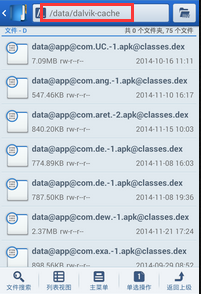
这个释放解压操作是系统做的。所以PathClassLoader可以不需要这个参数的。
上面看了他们两的区别，下面在来看一下Android中的各种类加载器分别加载哪些类：
package com.example.androiddemo;
import android.app.Activity;
import android.content.Context;
import android.os.Bundle;
import android.util.Log;
import android.widget.ListView;
public class MainActivity extends Activity {
@Override
protected void onCreate(Bundle savedInstanceState) {
super.onCreate(savedInstanceState);
setContentView(R.layout.activity_main);
Log.i("DEMO", "Context的类加载加载器:"+Context.class.getClassLoader());
Log.i("DEMO", "ListView的类加载器:"+ListView.class.getClassLoader());
Log.i("DEMO", "应用程序默认加载器:"+getClassLoader());
Log.i("DEMO", "系统类加载器:"+ClassLoader.getSystemClassLoader());
Log.i("DEMO", "系统类加载器和Context的类加载器是否相等:"+(Context.class.getClassLoader()==ClassLoader.getSystemClassLoader()));
Log.i("DEMO", "系统类加载器和应用程序默认加载器是否相等:"+(getClassLoader()==ClassLoader.getSystemClassLoader()));
Log.i("DEMO","打印应用程序默认加载器的委派机制:");
ClassLoader classLoader = getClassLoader();
while(classLoader != null){
Log.i("DEMO", "类加载器:"+classLoader);
classLoader = classLoader.getParent();
}
Log.i("DEMO","打印系统加载器的委派机制:");
classLoader = ClassLoader.getSystemClassLoader();
while(classLoader != null){
Log.i("DEMO", "类加载器:"+classLoader);
classLoader = classLoader.getParent();
}
}
}
运行结果：
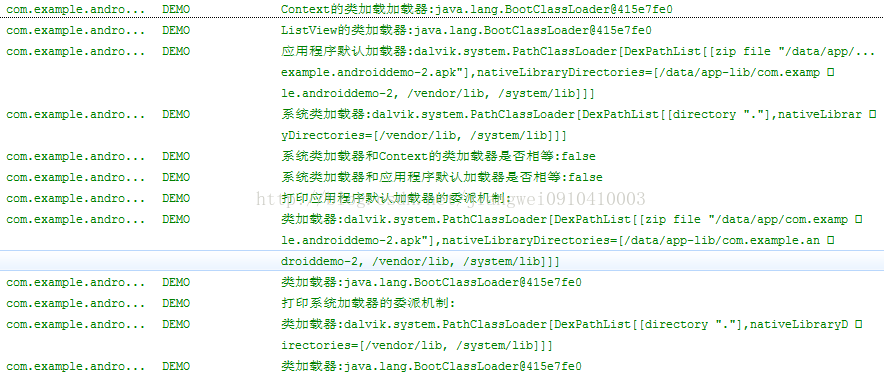
依次来看一下
1) 系统类的加载器
Log.i("DEMO", "Context的类加载加载器:"+Context.class.getClassLoader());
Log.i("DEMO", "ListView的类加载器:"+ListView.class.getClassLoader());
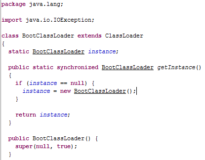
2) 应用程序的默认加载器
Log.i("DEMO", "应用程序默认加载器:"+getClassLoader());
运行结果：
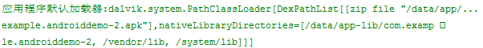
默认类加载器是PathClassLoader，同时可以看到加载的apk路径，libPath(一般包括/vendor/lib和/system/lib)
3) 系统类加载器
Log.i("DEMO", "系统类加载器:"+ClassLoader.getSystemClassLoader());
运行结果：
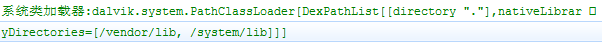
系统类加载器其实还是PathClassLoader，只是加载的apk路径不是/data/app/xxx.apk了，而是系统apk的路径：/system/app/xxx.apk
4) 默认加载器的委派机制关系
Log.i("DEMO","打印应用程序默认加载器的委派机制:");
ClassLoader classLoader = getClassLoader();
while(classLoader != null){
Log.i("DEMO", "类加载器:"+classLoader);
classLoader = classLoader.getParent();
}
打印结果：
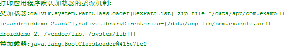
默认加载器PathClassLoader的父亲是BootClassLoader
5) 系统加载器的委派机制关系
Log.i("DEMO","打印系统加载器的委派机制:");
classLoader = ClassLoader.getSystemClassLoader();
while(classLoader != null){
Log.i("DEMO", "类加载器:"+classLoader);
classLoader = classLoader.getParent();
}
运行结果：
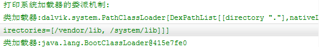
可以看到系统加载器的父亲也是BootClassLoader
二、分析遇到的问题的原因和解决办法
DexClassLoader加载原理和分析在实现插件时不同操作造成错误的原因分析
这里主要用了三个工程：
PluginImpl：插件接口工程(只是接口的定义)PluginSDK：插件工程(实现插件接口，定义具体的功能)
HostProject：宿主工程(需要引用插件接口工程，然后动态的加载插件工程)(例子项目中名字是PluginDemos)

第一、项目介绍
下面来看一下源代码：
1、PluginImpl工程：
1) IBean.java
package com.pluginsdk.interfaces;
public abstract interface IBean{
public abstract String getName();
public abstract void setName(String paramString);
}
2) IDynamic.java
package com.pluginsdk.interfaces;
import android.content.Context;
public abstract interface IDynamic{
public abstract void methodWithCallBack(YKCallBack paramYKCallBack);
public abstract void showPluginWindow(Context paramContext);
public abstract void startPluginActivity(Context context,Class<?> cls);
public abstract String getStringForResId(Context context);
}
其他的就不列举了。
2、PluginSDK工程：
1) Dynamic.java
/**
* Dynamic1.java
* com.youku.pluginsdk.imp
*
* Function： TODO
*
* ver date author
* ──────────────────────────────────
* 2014-10-20 Administrator
*
* Copyright (c) 2014, TNT All Rights Reserved.
*/
package com.pluginsdk.imp;
import android.app.AlertDialog;
import android.app.AlertDialog.Builder;
import android.app.Dialog;
import android.content.Context;
import android.content.DialogInterface;
import android.content.Intent;
import com.pluginsdk.bean.Bean;
import com.pluginsdk.interfaces.IDynamic;
import com.pluginsdk.interfaces.YKCallBack;
import com.youku.pluginsdk.R;
/**
* ClassName:Dynamic1
*
* @author jiangwei
* @version
* @since Ver 1.1
* @Date 2014-10-20 下午5:57:10
*/
public class Dynamic implements IDynamic{
/**
*/
public void methodWithCallBack(YKCallBack callback) {
Bean bean = new Bean();
bean.setName("PLUGIN_SDK_USER");
callback.callback(bean);
}
public void showPluginWindow(Context context) {
AlertDialog.Builder builder = new Builder(context);
builder.setMessage("对话框");
builder.setTitle(R.string.hello_world);
builder.setNegativeButton("取消", new Dialog.OnClickListener() {
@Override
public void onClick(DialogInterface dialog, int which) {
dialog.dismiss();
}
});
Dialog dialog = builder.create();//.show();
dialog.show();
}
public void startPluginActivity(Context context,Class<?> cls){
/**
*这里要注意几点:
*1、如果单纯的写一个MainActivity的话，在主工程中也有一个MainActivity，开启的Activity还是主工程中的MainActivity
*2、如果这里将MainActivity写成全名的话，还是有问题，会报找不到这个Activity的错误
*/
Intent intent = new Intent(context,cls);
context.startActivity(intent);
}
public String getStringForResId(Context context){
return context.getResources().getString(R.string.hello_world);
}
}
2) Bean.java
/**
* User.java
* com.youku.pluginsdk.bean
*
* Function： TODO
*
* ver date author
* ──────────────────────────────────
* 2014-10-20 Administrator
*
* Copyright (c) 2014, TNT All Rights Reserved.
*/
package com.pluginsdk.bean;
/**
* ClassName:User
*
* @author jiangwei
* @version
* @since Ver 1.1
* @Date 2014-10-20 下午1:35:16
*/
public class Bean implements com.pluginsdk.interfaces.IBean{
/**
*
*/
private String name = "这是来自于插件工程中设置的初始化的名字";
public String getName() {
return name;
}
public void setName(String name) {
this.name = name;
}
}
3、宿主工程HostProject
1) MainActivity.java
package com.plugindemo;
import java.io.File;
import java.lang.reflect.Method;
import android.annotation.SuppressLint;
import android.app.Activity;
import android.content.Context;
import android.content.res.AssetManager;
import android.content.res.Resources;
import android.content.res.Resources.Theme;
import android.os.Bundle;
import android.os.Environment;
import android.util.Log;
import android.view.View;
import android.widget.Button;
import android.widget.ListView;
import android.widget.Toast;
import com.pluginsdk.interfaces.IBean;
import com.pluginsdk.interfaces.IDynamic;
import com.pluginsdk.interfaces.YKCallBack;
import com.youku.plugindemo.R;
import dalvik.system.DexClassLoader;
public class MainActivity extends Activity {
private AssetManager mAssetManager;//资源管理器
private Resources mResources;//资源
private Theme mTheme;//主题
private String apkFileName = "PluginSDKs.apk";
private String dexpath = null;//apk文件地址
private File fileRelease = null; //释放目录
private DexClassLoader classLoader = null;
@SuppressLint("NewApi")
@Override
protected void onCreate(Bundle savedInstanceState) {
super.onCreate(savedInstanceState);
setContentView(R.layout.activity_main);
dexpath = Environment.getExternalStorageDirectory() + File.separator+apkFileName;
fileRelease = getDir("dex", 0);
/*初始化classloader
* dexpath dex文件地址
* fileRelease 文件释放地址
* 父classLoader
*/
Log.d("DEMO", (getClassLoader()==ListView.class.getClassLoader())+"");
Log.d("DEMO",ListView.class.getClassLoader()+"");
Log.d("DEMO", Context.class.getClassLoader()+"");
Log.d("DEMO", Context.class.getClassLoader().getSystemClassLoader()+"");
Log.d("DEMO",Activity.class.getClassLoader()+"");
Log.d("DEMO", (Context.class.getClassLoader().getSystemClassLoader() == ClassLoader.getSystemClassLoader())+"");
Log.d("DEMO",ClassLoader.getSystemClassLoader()+"");
classLoader = new DexClassLoader(dexpath, fileRelease.getAbsolutePath(),null,getClassLoader());
Button btn_1 = (Button)findViewById(R.id.btn_1);
Button btn_2 = (Button)findViewById(R.id.btn_2);
Button btn_3 = (Button)findViewById(R.id.btn_3);
Button btn_4 = (Button)findViewById(R.id.btn_4);
Button btn_5 = (Button)findViewById(R.id.btn_5);
Button btn_6 = (Button)findViewById(R.id.btn_6);
btn_1.setOnClickListener(new View.OnClickListener() {//普通调用 反射的方式
@Override
public void onClick(View arg0) {
Class mLoadClassBean;
try {
mLoadClassBean = classLoader.loadClass("com.pluginsdk.bean.Bean");
Object beanObject = mLoadClassBean.newInstance();
Log.d("DEMO", "ClassLoader:"+mLoadClassBean.getClassLoader());
Log.d("DEMO", "ClassLoader:"+mLoadClassBean.getClassLoader().getParent());
Method getNameMethod = mLoadClassBean.getMethod("getName");
getNameMethod.setAccessible(true);
String name = (String) getNameMethod.invoke(beanObject);
Toast.makeText(MainActivity.this, name, Toast.LENGTH_SHORT).show();
} catch (Exception e) {
Log.e("DEMO", "msg:"+e.getMessage());
}
}
});
btn_2.setOnClickListener(new View.OnClickListener() {//带参数调用
@Override
public void onClick(View arg0) {
Class mLoadClassBean;
try {
mLoadClassBean = classLoader.loadClass("com.pluginsdk.bean.Bean");
Object beanObject = mLoadClassBean.newInstance();
//接口形式调用
Log.d("DEMO", beanObject.getClass().getClassLoader()+"");
Log.d("DEMO",IBean.class.getClassLoader()+"");
Log.d("DEMO",ClassLoader.getSystemClassLoader()+"");
IBean bean = (IBean)beanObject;
bean.setName("宿主程序设置的新名字");
Toast.makeText(MainActivity.this, bean.getName(), Toast.LENGTH_SHORT).show();
}catch (Exception e) {
Log.e("DEMO", "msg:"+e.getMessage());
}
}
});
btn_3.setOnClickListener(new View.OnClickListener() {//带回调函数的调用
@Override
public void onClick(View arg0) {
Class mLoadClassDynamic;
try {
mLoadClassDynamic = classLoader.loadClass("com.pluginsdk.imp.Dynamic");
Object dynamicObject = mLoadClassDynamic.newInstance();
//接口形式调用
IDynamic dynamic = (IDynamic)dynamicObject;
//回调函数调用
YKCallBack callback = new YKCallBack() {//回调接口的定义
public void callback(IBean arg0) {
Toast.makeText(MainActivity.this, arg0.getName(), Toast.LENGTH_SHORT).show();
};
};
dynamic.methodWithCallBack(callback);
} catch (Exception e) {
Log.e("DEMO", "msg:"+e.getMessage());
}
}
});
btn_4.setOnClickListener(new View.OnClickListener() {//带资源文件的调用
@Override
public void onClick(View arg0) {
loadResources();
Class mLoadClassDynamic;
try {
mLoadClassDynamic = classLoader.loadClass("com.pluginsdk.imp.Dynamic");
Object dynamicObject = mLoadClassDynamic.newInstance();
//接口形式调用
IDynamic dynamic = (IDynamic)dynamicObject;
dynamic.showPluginWindow(MainActivity.this);
} catch (Exception e) {
Log.e("DEMO", "msg:"+e.getMessage());
}
}
});
btn_5.setOnClickListener(new View.OnClickListener() {//带资源文件的调用
@Override
public void onClick(View arg0) {
loadResources();
Class mLoadClassDynamic;
try {
mLoadClassDynamic = classLoader.loadClass("com.pluginsdk.imp.Dynamic");
Object dynamicObject = mLoadClassDynamic.newInstance();
//接口形式调用
IDynamic dynamic = (IDynamic)dynamicObject;
dynamic.startPluginActivity(MainActivity.this,
classLoader.loadClass("com.plugindemo.MainActivity"));
} catch (Exception e) {
Log.e("DEMO", "msg:"+e.getMessage());
}
}
});
btn_6.setOnClickListener(new View.OnClickListener() {//带资源文件的调用
@Override
public void onClick(View arg0) {
loadResources();
Class mLoadClassDynamic;
try {
mLoadClassDynamic = classLoader.loadClass("com.pluginsdk.imp.Dynamic");
Object dynamicObject = mLoadClassDynamic.newInstance();
//接口形式调用
IDynamic dynamic = (IDynamic)dynamicObject;
String content = dynamic.getStringForResId(MainActivity.this);
Toast.makeText(getApplicationContext(), content+"", Toast.LENGTH_LONG).show();
} catch (Exception e) {
Log.e("DEMO", "msg:"+e.getMessage());
}
}
});
}
protected void loadResources() {
try {
AssetManager assetManager = AssetManager.class.newInstance();
Method addAssetPath = assetManager.getClass().getMethod("addAssetPath", String.class);
addAssetPath.invoke(assetManager, dexpath);
mAssetManager = assetManager;
} catch (Exception e) {
e.printStackTrace();
}
Resources superRes = super.getResources();
superRes.getDisplayMetrics();
superRes.getConfiguration();
mResources = new Resources(mAssetManager, superRes.getDisplayMetrics(),superRes.getConfiguration());
mTheme = mResources.newTheme();
mTheme.setTo(super.getTheme());
}
@Override
public AssetManager getAssets() {
return mAssetManager == null ? super.getAssets() : mAssetManager;
}
@Override
public Resources getResources() {
return mResources == null ? super.getResources() : mResources;
}
@Override
public Theme getTheme() {
return mTheme == null ? super.getTheme() : mTheme;
}
}
三个工程的下载地址：http://download.csdn.net/detail/jiangwei0910410003/8188011
第二、项目引用关系
工程文件现在大致看完了，我们看一下他们的引用关系吧：
1、将接口工程PluginImpl设置成一个Library
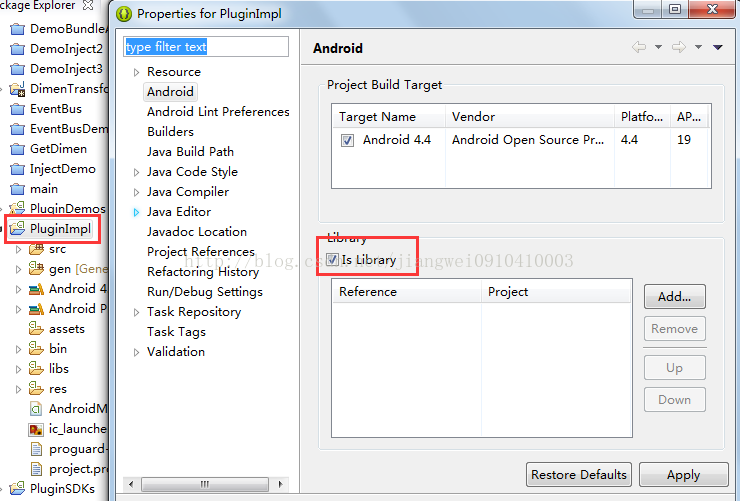
2、插件工程PluginSDKs引用插件的jar
注意是lib文件夹，不是libs，这个是有区别的，后面会说道
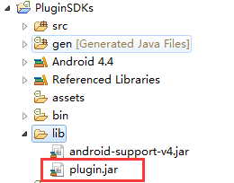
3、HostProject项目引用PluginImpl这个library

项目引用完成之后，我们编译PluginSDKs项目，生成PluginSDKs.apk放到手机的sdcard的根目录(因为我代码中是从这个目录进行加载apk的，当然这个目录是可以修改的)，然后运行HostProject
看到效果了吧。运行成功，其实这个对话框是在插件中定义的，但是我们知道定义对话框是需要context变量的，所以这个变量就是通过参数从宿主工程中传递到插件工程即可，成功了就不能这么了事，因为我还没有说道我遇到的问题，下面就来看一下遇到的几个问题
三、问题分析
问题一：Could not find class...(找不到指定的类)
这个问题产生的操作：
插件工程PluginSDKs的引用方式不变，宿主工程PluginDemos的引用方式改变
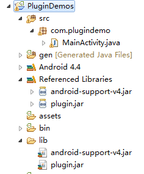
在说这个原因之前先来了解一下Eclipse中引用工程的不同方式和区别：
第一种：最常用的将引用工程打成jar放到需要引用工程的libs下面(这里是将PluginImpl打成jar,放到HostProject工程的libs中)
这种方式是Eclipse推荐使用的，当我们在建立一个项目的时候也会自动产生这个文件夹，当我们将我们需要引用的工程打成jar，然后放到这个文件夹之后，Eclipse就自动导入了(这个功能是Eclipse3.7之后有的)。
第二种：和第一种的区别是，我们可以从新新建一个文件夹比如是lib,然后将引用的jar放到这个文件夹中，但是此时Eclipse是不会自动导入的，需要我们手动的导入(add build path...)，但是这个是一个区别，还有一个区别，也是到这个这个报错原因的区别，就是libs文件夹中的jar，在运行的时候是会将这个jar集成到程序中的，而我们新建的文件夹(名字非libs即可)，及时我们手动的导入，编译是没有问题的，但是运行的时候，是不会将jar集成到程序中。
第三种：和前两种的区别是不需要将引用工程打成jar，直接引用这个工程
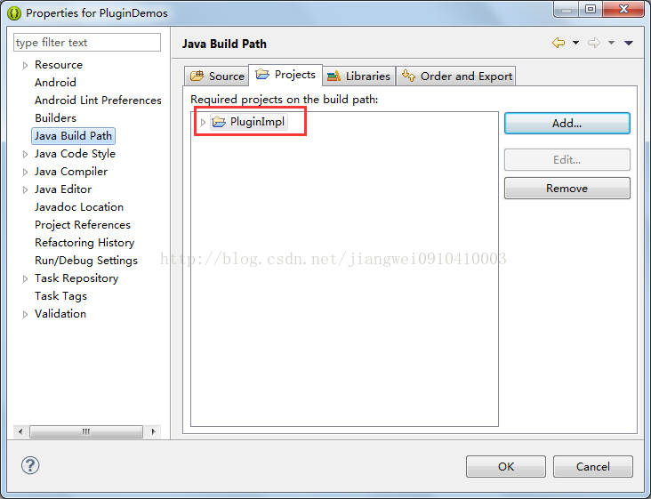
这种方式其实效果和第一种差不多，唯一的区别就是不需要打成jar,但是运行的时候是不会将引用工程集成到程序中的。
第四种：和第三种的方式是一样的，也是不需要将引用工程打成jar,直接引用工程：

这个前提是需要设置PluginImpl项目为Library,同时引用的项目和被引用的项目必须在一个工作空间中，不然会报错，这种的效果和第二种是一样的，在运行的时候是会将引用工程集成到程序中的。
第五种：和第一种、第二种差不多，导入jar：
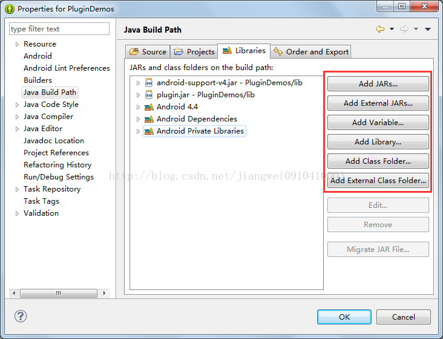
这里有很多种方式选择jar的位置，但是这些操作的效果和第一种是一样的，运行的时候是不会将引用的jar集成到程序中的。
总结上面的五种方式，我们可以看到，第二种和第四种的效果是一样的，也是最普遍的导入引用工程的方式，因为其他三种方式的话，其实在编译的时候是不会有问题的，但是在运行的时候会报错(找不到指定的类，可以依次尝试一下)，不过这三种方式只要一步就可以和那两种方式实现的效果一样了
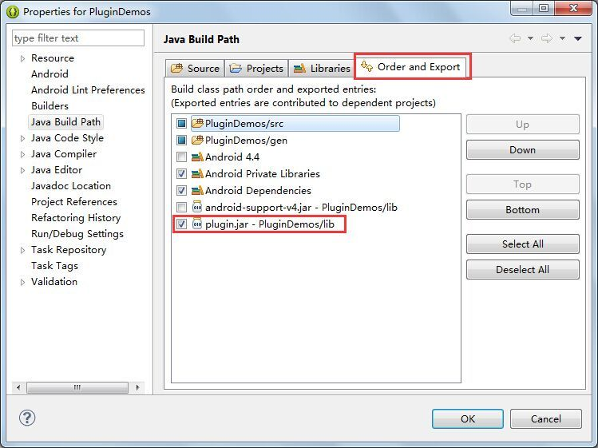
只要设置导出的时候勾选上这个jar就可以了。那么其实这五种方式都是可以的，性质和效果是一样的。
说完了Eclipse中引用工程的各种方式以及区别之后，我们在回过头来看一下，上面遇到的问题：Could not find class...
其实这个问题就简单了，原因是：插件工程PluginSDKs使用的是lib文件夹导入的jar(这个jar是不会集成到程序中的)，而宿主工程PluginDemos的引用工程的方式也变成了lib文件夹(jar也是不会集成到程序中的)。那么程序运行的时候就会出现错误：
Could not find class 'com.pluginsdk.interfaces.IBean'
问题二：Class ref in pre-verified class resolved to unexpected implementation(相同的类加载了两次)
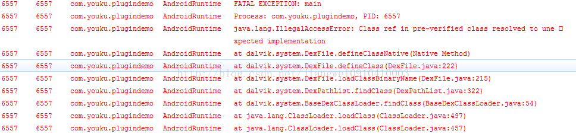
这个问题产生的操作：
插件工程PluginSDKs和宿主工程PluginDemos引用工程的方式都变成library(或者是都用libs文件夹导入jar)
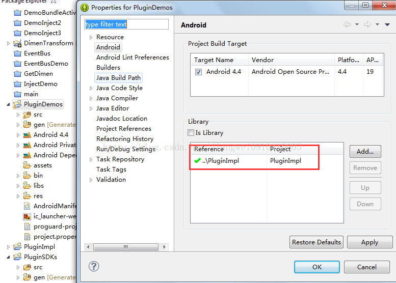
这个错误的原因也是很多做插件的开发者第一次都会遇到的问题，其实这个问题的本质是PluginImpl中的接口被加载了两次，因为插件工程和宿主工程在运行的时候都会把PluginImpl集成到程序中。对于这个问题，我们来分析一下，首先对于宿主apk,他的类加载器是PathClassLoader(这个对于每个应用来说是默认的加载器，原因很简单，PathClassLoader只能加载/data/app目录下的apk,就是已经安装的apk,一般我们的apk都是安装之后在运行，所以用这个加载器也是理所当然的)。这个加载器开始加载插件接口工程(宿主工程中引入的PluginImpl)中的IBean。当使用DexClassLoader加载PluginSDKs.apk的时候，首先会让宿主apk的PathClassLoader加载器去加载，这个好多人有点迷糊了，为什么会先让PathClassLoader加载器去加载呢？
这个就是Java中的类加载机制的双亲委派机制：http://blog.csdn.net/jiangwei0910410003/article/details/17733153
Android中的加载机制也是类似的，我们这里的代码设置了DexClassLoader的父加载器为当前类加载器(宿主apk的PathClassLoader),不行的话，可以打印一下getClassLoader()方法的返回结果看一下。
classLoader = new DexClassLoader(dexpath, fileRelease.getAbsolutePath(),null,getClassLoader());
那么加载器就是一样的了(宿主apk的PathClassLoader)，那么就奇怪了，都是一个为什么还有错误呢？查看系统源码可以了解： Resolve.c源码(这个是在虚拟机dalvik中的)：源码下载地址为：http://blog.csdn.net/jiangwei0910410003/article/details/37988637
我们来看一下他的一个主要函数：
/*
* Find the class corresponding to "classIdx", which maps to a class name
* string. It might be in the same DEX file as "referrer", in a different
* DEX file, generated by a class loader, or generated by the VM (e.g.
* array classes).
*
* Because the DexTypeId is associated with the referring class' DEX file,
* we may have to resolve the same class more than once if it's referred
* to from classes in multiple DEX files. This is a necessary property for
* DEX files associated with different class loaders.
*
* We cache a copy of the lookup in the DexFile's "resolved class" table,
* so future references to "classIdx" are faster.
*
* Note that "referrer" may be in the process of being linked.
*
* Traditional VMs might do access checks here, but in Dalvik the class
* "constant pool" is shared between all classes in the DEX file. We rely
* on the verifier to do the checks for us.
*
* Does not initialize the class.
*
* "fromUnverifiedConstant" should only be set if this call is the direct
* result of executing a "const-class" or "instance-of" instruction, which
* use class constants not resolved by the bytecode verifier.
*
* Returns NULL with an exception raised on failure.
*/
ClassObject* dvmResolveClass(const ClassObject* referrer, u4 classIdx,
bool fromUnverifiedConstant)
{
DvmDex* pDvmDex = referrer->pDvmDex;
ClassObject* resClass;
const char* className;
/*
* Check the table first -- this gets called from the other "resolve"
* methods.
*/
resClass = dvmDexGetResolvedClass(pDvmDex, classIdx);
if (resClass != NULL)
return resClass;
LOGVV("--- resolving class %u (referrer=%s cl=%p)\n",
classIdx, referrer->descriptor, referrer->classLoader);
/*
* Class hasn't been loaded yet, or is in the process of being loaded
* and initialized now. Try to get a copy. If we find one, put the
* pointer in the DexTypeId. There isn't a race condition here --
* 32-bit writes are guaranteed atomic on all target platforms. Worst
* case we have two threads storing the same value.
*
* If this is an array class, we'll generate it here.
*/
className = dexStringByTypeIdx(pDvmDex->pDexFile, classIdx);
if (className[0] != '\0' && className[1] == '\0') {
/* primitive type */
resClass = dvmFindPrimitiveClass(className[0]);
} else {
resClass = dvmFindClassNoInit(className, referrer->classLoader);
}
if (resClass != NULL) {
/*
* If the referrer was pre-verified, the resolved class must come
* from the same DEX or from a bootstrap class. The pre-verifier
* makes assumptions that could be invalidated by a wacky class
* loader. (See the notes at the top of oo/Class.c.)
*
* The verifier does *not* fail a class for using a const-class
* or instance-of instruction referring to an unresolveable class,
* because the result of the instruction is simply a Class object
* or boolean -- there's no need to resolve the class object during
* verification. Instance field and virtual method accesses can
* break dangerously if we get the wrong class, but const-class and
* instance-of are only interesting at execution time. So, if we
* we got here as part of executing one of the "unverified class"
* instructions, we skip the additional check.
*
* Ditto for class references from annotations and exception
* handler lists.
*/
if (!fromUnverifiedConstant &&
IS_CLASS_FLAG_SET(referrer, CLASS_ISPREVERIFIED))
{
ClassObject* resClassCheck = resClass;
if (dvmIsArrayClass(resClassCheck))
resClassCheck = resClassCheck->elementClass;
if (referrer->pDvmDex != resClassCheck->pDvmDex &&
resClassCheck->classLoader != NULL)
{
LOGW("Class resolved by unexpected DEX:"
" %s(%p):%p ref [%s] %s(%p):%p\n",
referrer->descriptor, referrer->classLoader,
referrer->pDvmDex,
resClass->descriptor, resClassCheck->descriptor,
resClassCheck->classLoader, resClassCheck->pDvmDex);
LOGW("(%s had used a different %s during pre-verification)\n",
referrer->descriptor, resClass->descriptor);
dvmThrowException("Ljava/lang/IllegalAccessError;",
"Class ref in pre-verified class resolved to unexpected "
"implementation");
return NULL;
}
}
LOGVV("##### +ResolveClass(%s): referrer=%s dex=%p ldr=%p ref=%d\n",
resClass->descriptor, referrer->descriptor, referrer->pDvmDex,
referrer->classLoader, classIdx);
/*
* Add what we found to the list so we can skip the class search
* next time through.
*
* TODO: should we be doing this when fromUnverifiedConstant==true?
* (see comments at top of oo/Class.c)
*/
dvmDexSetResolvedClass(pDvmDex, classIdx, resClass);
} else {
/* not found, exception should be raised */
LOGVV("Class not found: %s\n",
dexStringByTypeIdx(pDvmDex->pDexFile, classIdx));
assert(dvmCheckException(dvmThreadSelf()));
}
return resClass;
}
我们看下面的判断可以得到，就是在这里抛出的异常，代码逻辑我们就不看了，因为太多的头文件相互引用，看起来很费劲，直接看一下函数的说明：

红色部分内容，他的意思是我们需要解决从不同的dex文件中加载相同的class,需要使用不同的类加载器。
说白了就是，同一个类加载器从不同的dex文件中加载相同的class。所以上面是同一个类加载器PathClassLoader去加载(宿主apk和插件apk)来自不同的dex中的相同的类IBean。所以我们在做动态加载的时候都说过：不要把接口的jar一起打包成jar/dex/apk
问题三：Connot be cast to....(类型转化异常)

这个问题产生的操作：
插件工程PluginSDKs和宿主工程都是用Library方式引用工程(或者是libs)，同时将上面的一行代码
classLoader = new DexClassLoader(dexpath, fileRelease.getAbsolutePath(),null,getClassLoader());
修改成：
classLoader = new DexClassLoader(dexpath, fileRelease.getAbsolutePath(),null,ClassLoader.getSystemClassLoader());
就是将DexClassLoader的父加载器修改了一下：我们知道getClassLoader()获取到的是应用的默认加载器PathClassLoader，而ClassLoader.getSystemClassLoader()是获取系统类加载器，这样修改之后会出现这样的错误的原因是：插件工程和宿主工程都集成了PluginImpl，所以DexClassLoader在加载Bean的时候，首先会让ClassLoader.getSystemClassLoader()类加载器(DexClassLoader的父加载器)去查找，因为Bean是实现了IBean接口，这时候ClassLoader.getSystemClassLoader就会从插件工程的apk中查找这个接口，结果没找到，没找到的话就让DexClassLoader去找，结果在PluginSDKs.apk中找到了，就加载进来，同时宿主工程中也集成了插件接口PluginImpl，他使用PathClassLoader去宿主工程中去查找，结果也是查找到了，也加载进来了，但是在进行类型转化的时候出现了错误：
IBean bean = (IBean)beanObject;
原因说白了就是：同一个类，用不同的类加载器进行加载产生出来的对象是不同的，不能进行相互赋值，负责就会出现转化异常。
总结
上面就说到了一些开发插件的过程中会遇到的一些问题，当我们知道这些问题之后，解决方法自然就会有了，
1) 为了避免Could not find class...，我们必须要集成PluginImpl，方式是使用Library或者是libs文件夹导入jar (这里要注意，因为我们运行的其实是宿主工程apk，所以宿主工程一定要集成PluginImpl，如果他不集成的话，即使插件工程apk集成了也还是没有效果的)
2) 为了避免Class ref in pre-verified class resolved to unexpected implementation，我们在宿主工程和插件工程中只能集成一份PluginImpl，在结合上面的错误避免方式，可以得到正确的方式： 一定是宿主工程集成PluginImpl，插件工程一定不能集成PluginImpl。
(以后再制作插件的时候记住一句话就可以了，插件工程打包不能集成接口jar，宿主工程打包一定要集成接口jar)
关于第三个问题，其实在开发的过程中一般不会碰到，这里说一下主要是为了马上介绍Android中的类加载器的相关只是来做铺垫的
(PS:问题都解决了，后续就要介绍插件的制作了~~)